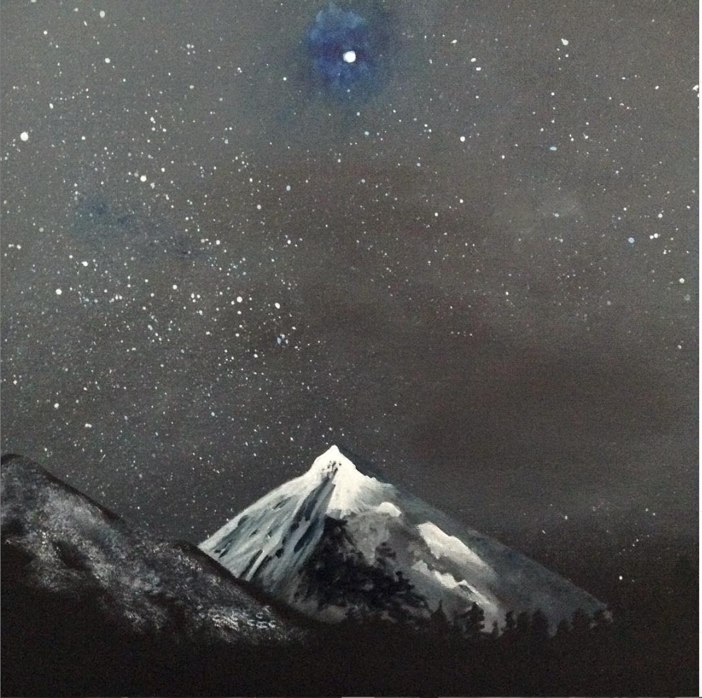
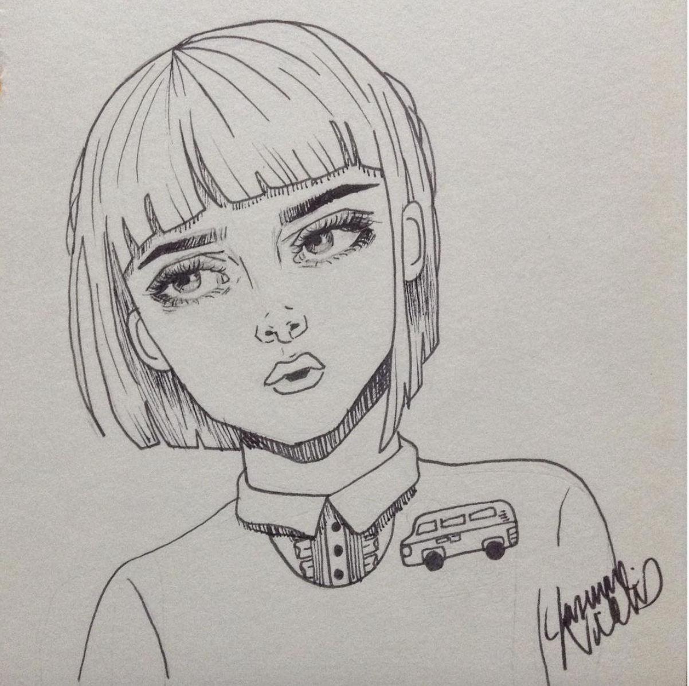
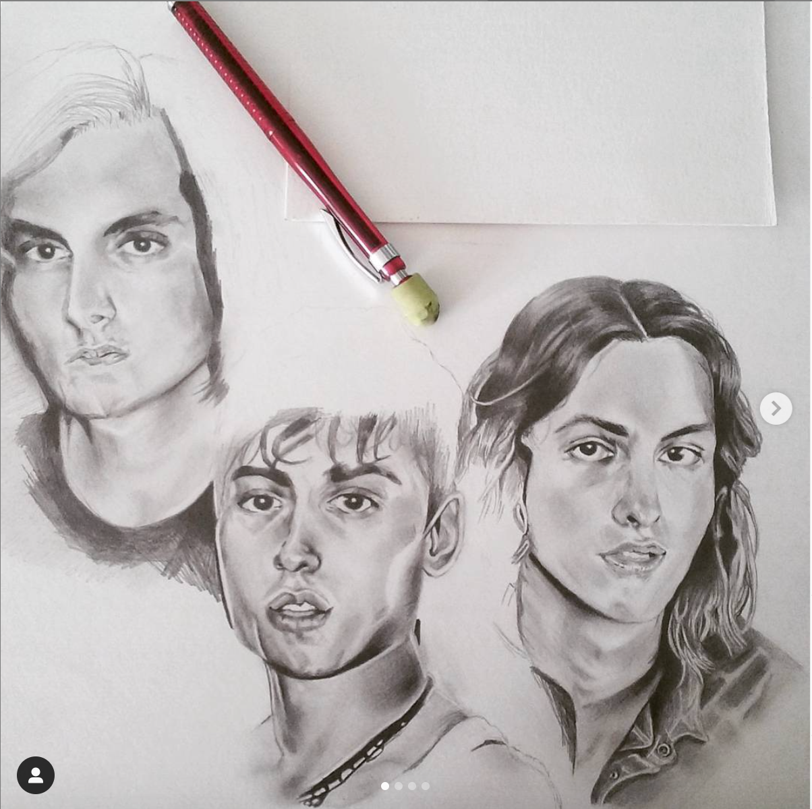
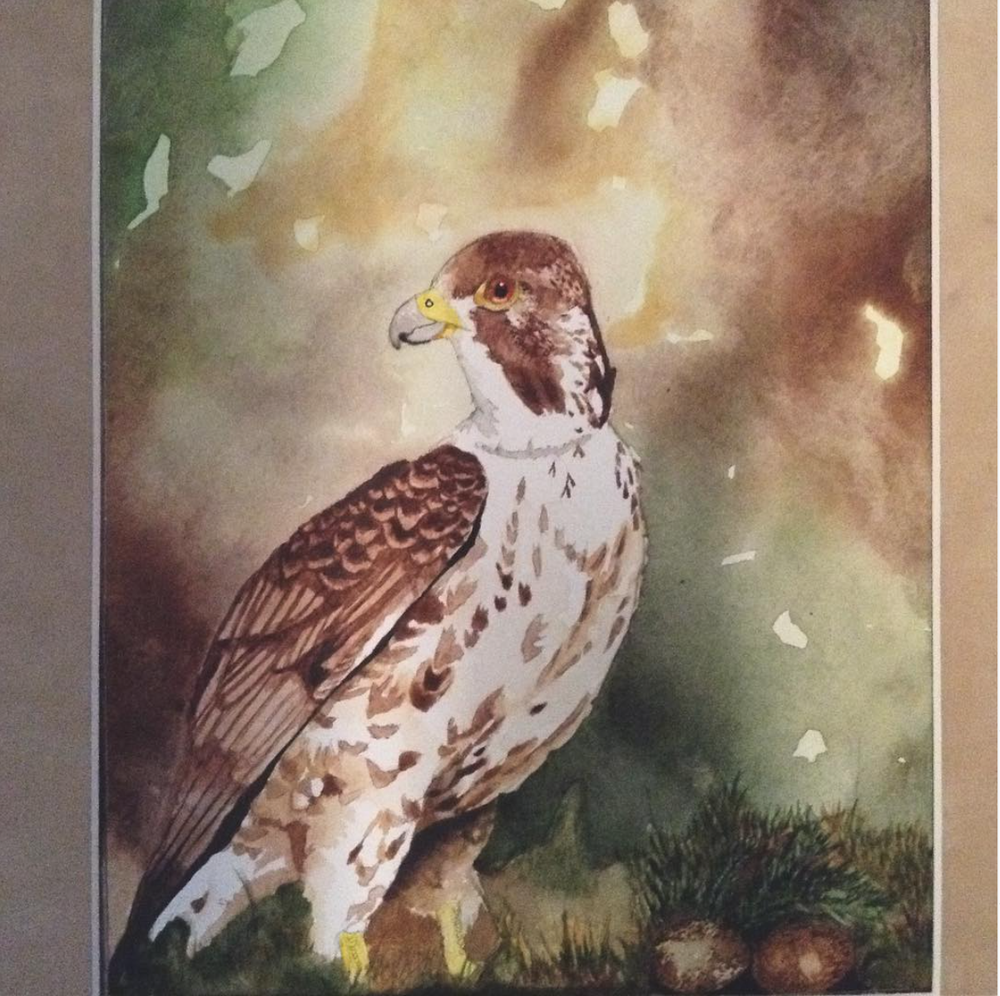

I like to paint landscapes mostly mountians. This is the first acrylic painting I did with the ocean in view.
My favorite painting is this one called Mountian Sound. It is the first mountian painting I ever did. I really love the nigt sky when stars can be seen so I'm attached to this painting the most.
This is a sketch I came up with from my imagination. It doesn't have much detail but I'm happy how the eyes turned out.
This is a graphite drawing of one of the bands I listen to called Greta Van Fleet. I'm not a fan of the finished product so I will just share one of the stages that I did like.
Last is a watercolor painting of a hawk that I did back in highschool. This is one, if not the first, watercolor paintings that I did.